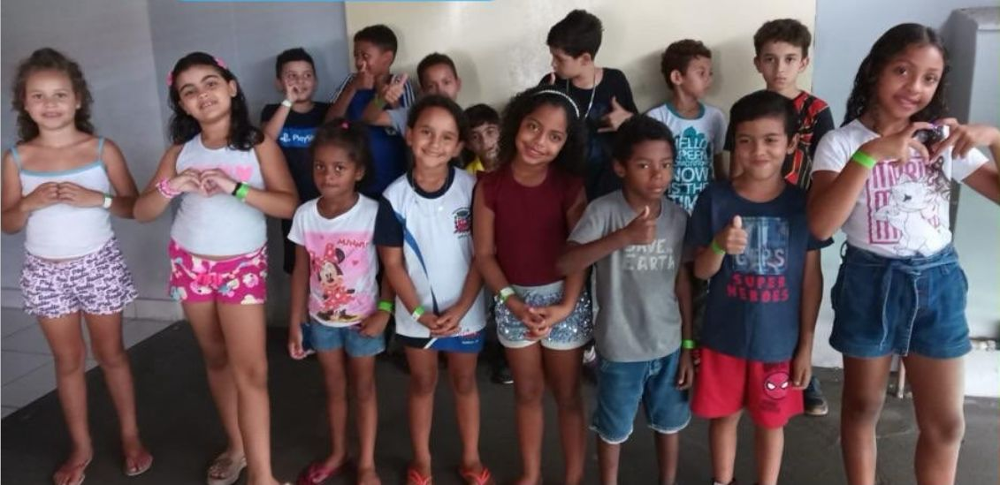
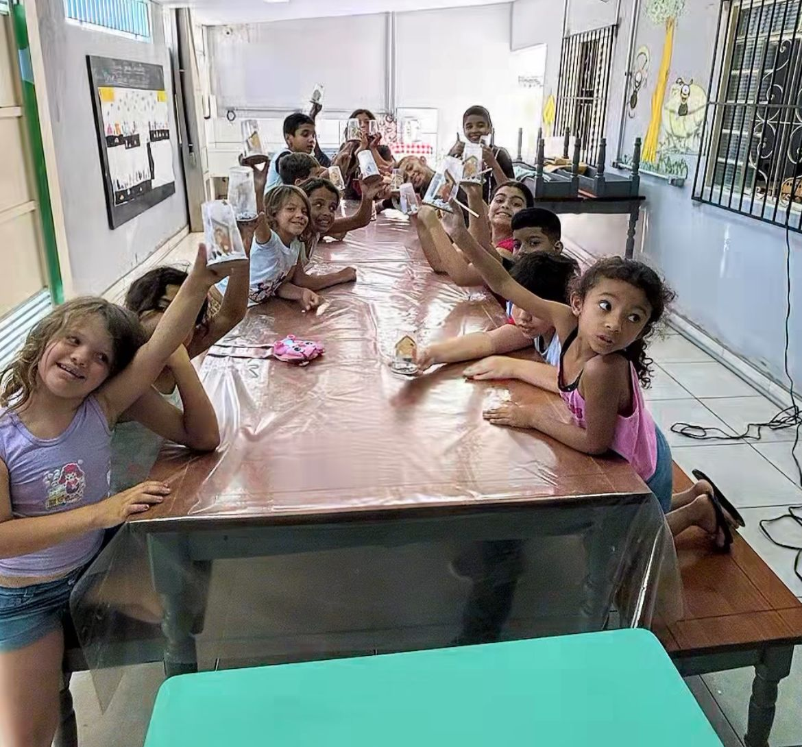
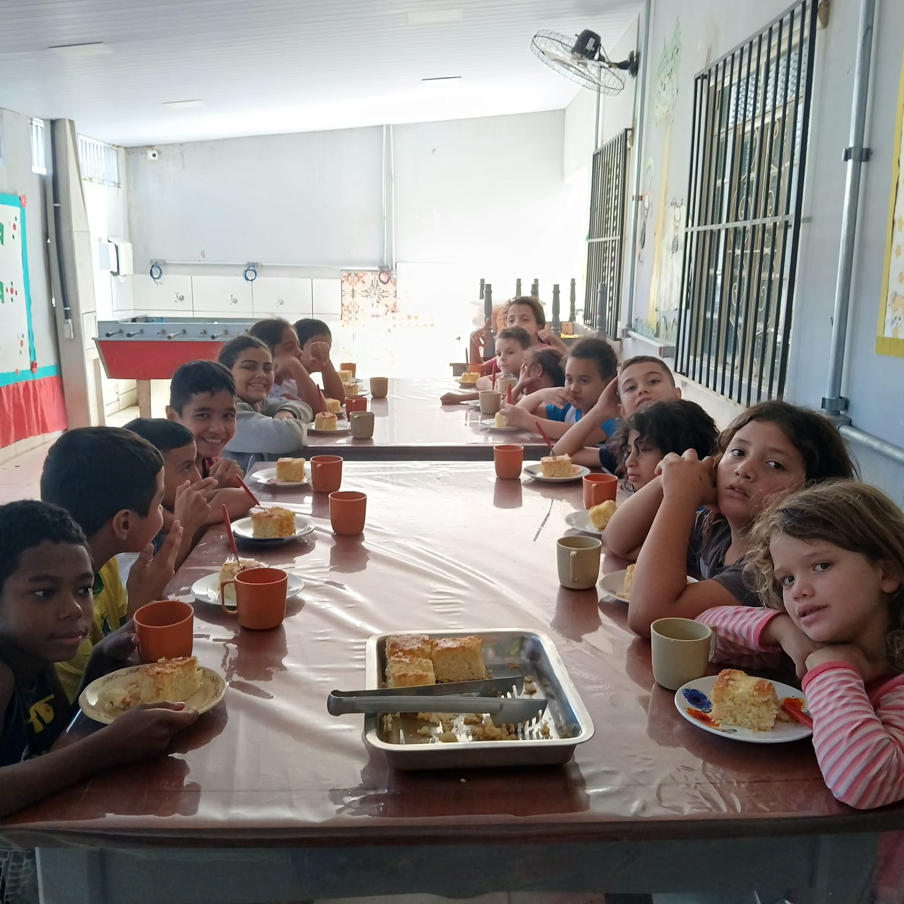
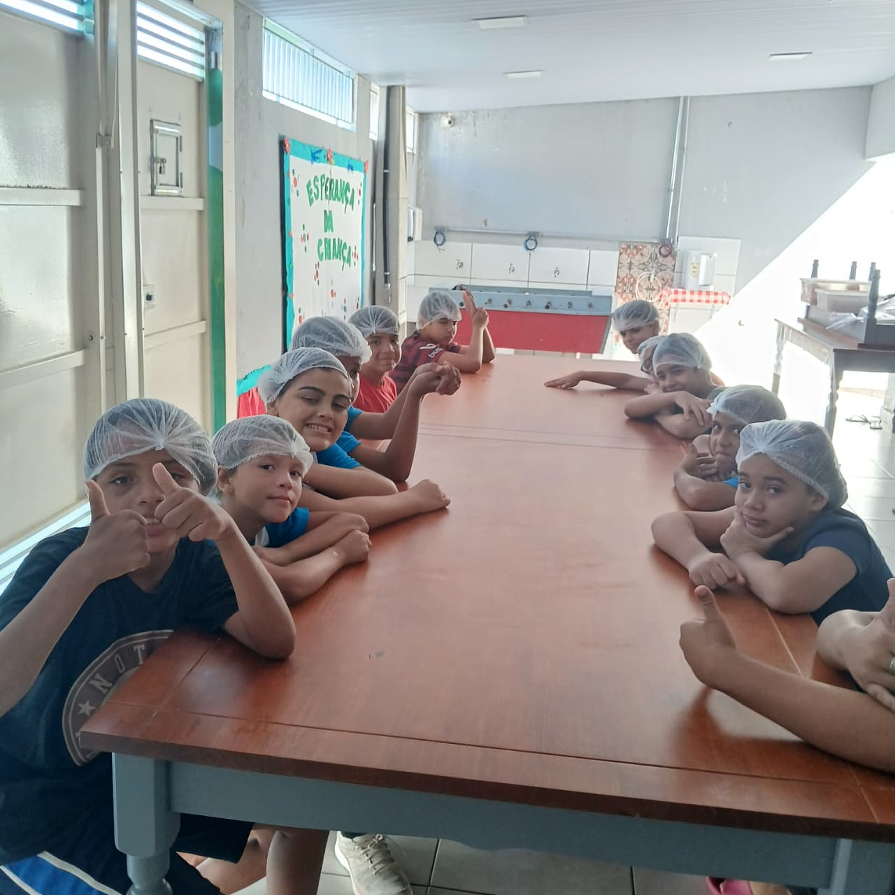
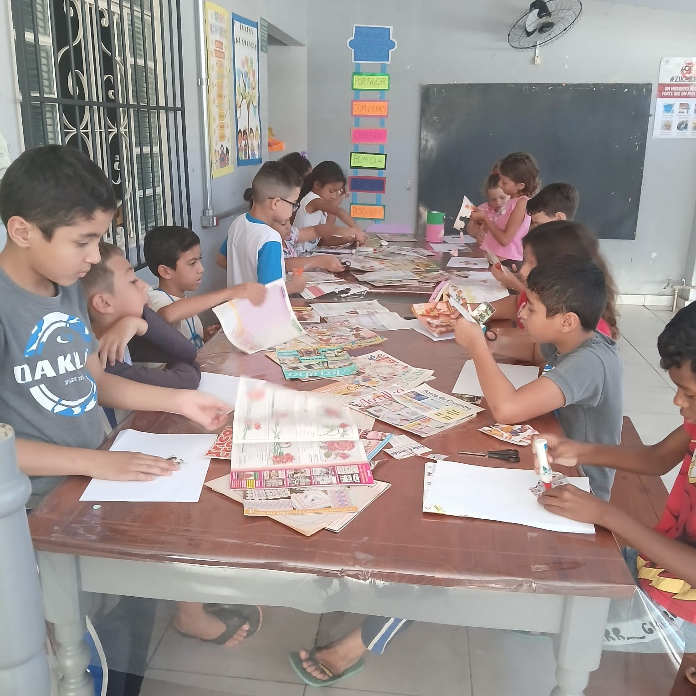
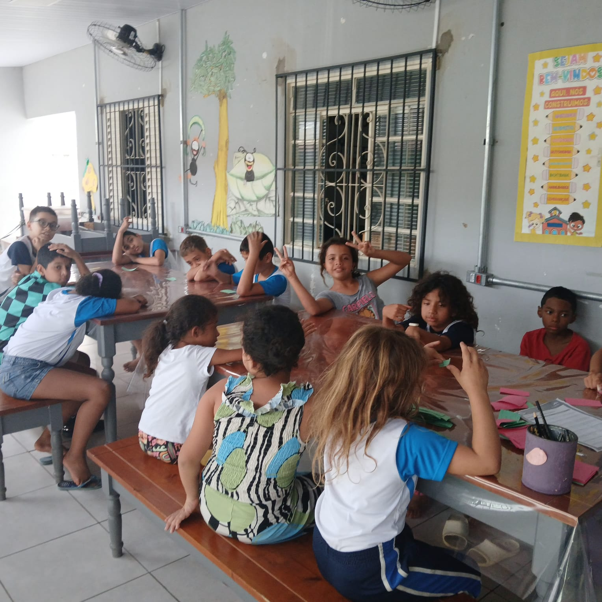
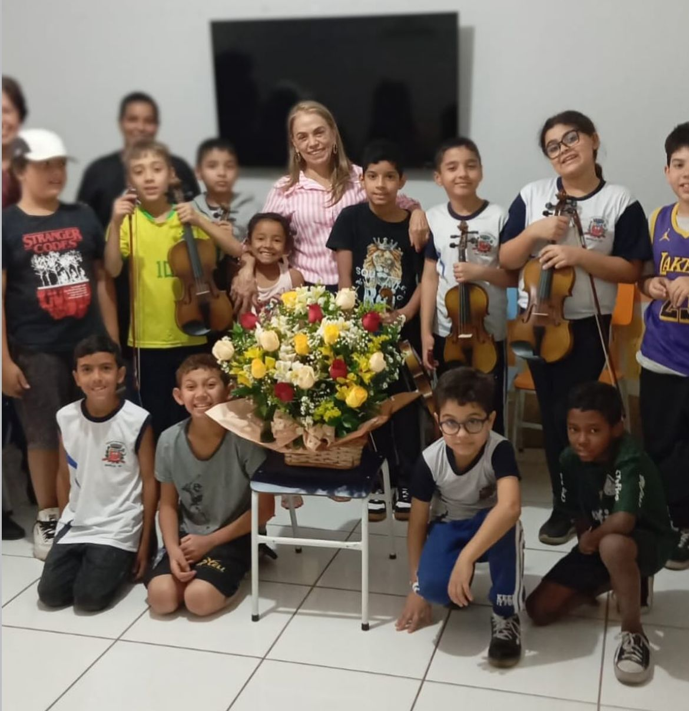
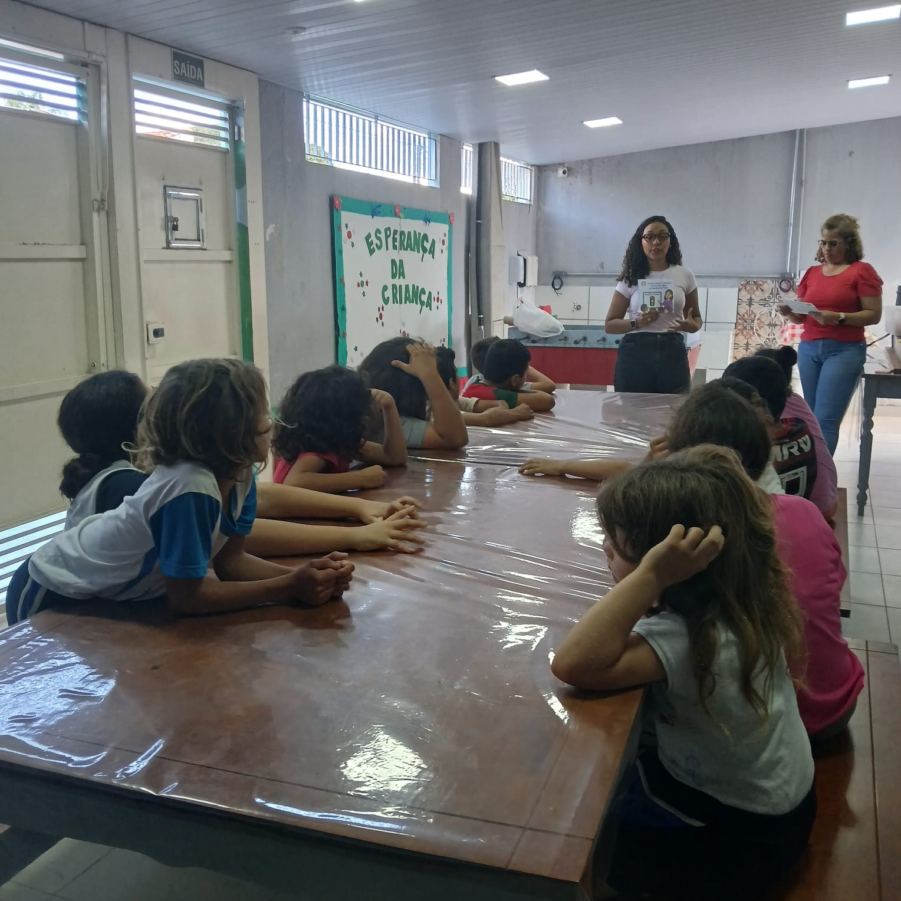

ONG em Marília/SP
Associação A Esperança da Criança
A esperança da criançaUm espaço de cuidado, proteção e desenvolvimento onde crianças em situação de vulnerabilidade encontram acolhida, alimentação, convivência e pessoas comprometidas em fortalecer sua autoestima, sua convivência e seus sonhos.

30 crianças acolhidas com presença, escuta e cuidado diário
Impacto real
Cuidado que se transforma em futuro
A ONG oferece às crianças um ponto de apoio concreto: um lugar seguro onde as crianças são vistas, alimentadas, orientadas e incentivadas a acreditar em si mesmas. Esse cuidado reduz inseguranças no cotidiano familiar, fortalece vínculos e cria perspectivas para que cada criança cresça com mais confiança.
Mais do que atendimento: pertencimento
Para muitas crianças, a Associação se tornou um espaço de referência. Elas encontram adultos de referência, aprendem a conviver em grupo, expressam emoções, e passam a enxergar possibilidades onde antes havia medo, timidez ou falta de perspectiva.
Desenvolvimento emocional e social
A acolhida diária auxilia no fortalecimento da autoestima, da identidade, da autonomia e da confiança. Cada oficina, refeição e conversa cria uma base afetiva para que as crianças se sintam capazes de aprender, sonhar e construir novos caminhos.
Nossa Missão
Possibilitar novos caminhos
A missão da Associação A Esperança da Criança é oferecer um ambiente seguro, afetivo e inclusivo para que cada criança reconheça seu valor, desenvolva suas habilidades e encontre novas possibilidades de vida.
Por meio do cuidado diário, da alimentação, das oficinas e da convivência, a ONG transforma vulnerabilidade em pertencimento, medo em confiança e sonhos em oportunidades concretas de desenvolvimento.

Transformação social com afeto
Cada atividade fortalece autoestima, convivência, identidade, diálogo, inclusão e esperança.
Sobre Nós
Uma história criada por sua idealizadora e fundadora
A Associação A Esperança da Criança nasceu em Marília/SP a partir da sensibilidade social de Maria Marta Góes, assistente social com quase 30 anos de atuação, com outros parceiros que acreditaram no projeto. Juntos, transformaram inquietação em ação concreta diante das desigualdades sociais.

Fundação e liderança
A ONG surgiu do desejo de oferecer um olhar mais humanizado às crianças que precisam de proteção, escuta e oportunidade.
Atendimento e alimentação
Atualmente, 30 crianças são atendidas por períodos e recebem duas refeições completas durante sua permanência na instituição.
Espaço de referência
Para muitas crianças, a ONG representa segurança, cuidado e uma presença confiável em sua rotina de desenvolvimento.
Impacto emocional
O trabalho fortalece autoestima, identidade, convivência, diálogo, inclusão social e desenvolvimento emocional.
Origem
O incômodo diante da desigualdade inspira uma ação social humanizada.
Fundação
Maria Marta e parceiros unem experiência, coragem e compromisso social.
Presente
30 crianças recebem acolhida, alimentação, oficinas e acompanhamento contínuo.
Futuro
A ONG segue ampliando oportunidades para que cada criança floresça.
Missão
Acolher crianças em riscos de vulnerabilidade social, fortalecendo vínculos sociais e familiares.
Visão
Ser referência por meio da convivência e do fortalecimento de vínculos social e familiar.
Valores
Convivência, vínculos fortes e saudáveis, cuidado, proteção, esperança e respeito.
Transformando vidas através da acolhida
Quando uma criança é cuidada, novos caminhos se tornam possíveis.
A presença da ONG auxilia pais e responsáveis a enfrentarem a rotina com mais tranquilidade, sabendo que seus filhos estão em um ambiente protegido, com alimentação, atividades orientadas e adultos atentos às suas necessidades. Esse apoio fortalece a criança por dentro: ela aprende a confiar, a conversar, a participar e a imaginar um futuro possível.
Alimentação e Desenvolvimento
Nutrir o corpo, incentivar a mente e fortalecer vínculos
A alimentação é parte essencial da acolhida. As crianças recebem refeições completas, têm sua frequência escolar acompanhada e participam de experiências educativas que unem cuidado, autonomia, convivência e aprendizado prático.

Panificadora educativa
Na prática, as crianças participam da produção de pães, pizzas, doces e salgados. O preparo dos alimentos desenvolve responsabilidade, higiene, paciência, coordenação motora, criatividade e trabalho em equipe. Além de contribuir com a alimentação, a atividade ensina que aprender também pode ser uma experiência afetiva e coletiva.
Aprendizado prático
As receitas transformam medidas, etapas e cuidados em uma vivência concreta de autonomia e concentração.
Incentivo educacional
A ONG acompanha a rotina escolar e incentiva a permanência na escola como caminho para desenvolvimento.
Convivência
Cozinhar em grupo ensina respeito ao tempo do outro, cooperação, escuta e responsabilidade compartilhada.
Nossas Oficinas
Aprender, criar, conviver e descobrir talentos
As oficinas são experiências de desenvolvimento integral. Cada atividade trabalha habilidades emocionais, educacionais e sociais que auxiliam as crianças a se expressar, conviver e construir autoestima.

Artística
A atividade artística abre espaço para pinturas, desenhos, colagens, trabalhos manuais e criações em grupo, fortalecendo expressão, imaginação e convivência.
- Objetivos: estimular criatividade, coordenação motora, autonomia e expressão de emoções.
- Benefícios: promove concentração, paciência, pertencimento e desenvolvimento emocional.
- Impacto: a criança transforma sentimentos em criação e ganha segurança para participar.
Gastronomia Lúdica
Na gastronomia lúdica, as crianças participam de experiências práticas com alimentos, aprendendo higiene, organização, cooperação e cuidado coletivo.
- Objetivos: ensinar etapas de preparo, medidas, responsabilidade e cuidado com os alimentos.
- Benefícios: desenvolve convivência, coordenação motora, trabalho em equipe e autonomia.
- Impacto: a criança percebe que pode produzir, colaborar e contribuir para o bem-estar do grupo.

Recreação
A recreação favorece o brincar, a integração e o respeito às regras de convivência, criando oportunidades para participação, cooperação e vínculos saudáveis.
- Objetivos: incentivar socialização, expressão corporal, escuta, respeito e participação em grupo.
- Benefícios: fortalece confiança, alegria, pertencimento e habilidades de convivência.
- Impacto: a criança aprende a compartilhar espaços, combinar regras e construir relações positivas.

Música
A música aproxima as crianças da arte, da cultura e da expressão emocional. O contato com instrumentos estimula coordenação, concentração, disciplina e trabalho em equipe.
- Objetivos: desenvolver percepção sonora, ritmo, coordenação motora, memória e sensibilidade artística.
- Benefícios: fortalece autoestima, confiança, socialização e capacidade de participar em grupo.
- Impacto: a criança descobre que sua voz importa e ganha segurança para conviver.

Roda de Conversas
A roda de conversas cria um espaço de escuta, diálogo e construção coletiva, auxiliando as crianças a nomear sentimentos, resolver conflitos e fortalecer vínculos.
- Objetivos: desenvolver comunicação, escuta, respeito, responsabilidade e consciência coletiva.
- Benefícios: melhora convivência, autocuidado, expressão emocional e participação.
- Impacto: as crianças aprendem a se posicionar com respeito e a reconhecer o outro.
Apadrinhe uma Criança
Seu apoio pode ser a presença que muda uma história
O apadrinhamento contribui com o desenvolvimento infantil, a educação, a alimentação, a acolhida e o apoio emocional. Mais do que uma contribuição, é um gesto de incentivo aos sonhos e ao crescimento de uma criança.
Quero apadrinharAjude a Transformar Vidas
Doe cuidado, alimento, oficinas e esperança
Sua doação contribui diretamente com alimentação, materiais, oficinas, acolhida e desenvolvimento infantil. Cada contribuição auxilia a manter um espaço onde crianças são cuidadas, estimuladas e lembradas de que seu futuro importa.
Alimentação
Materiais
Oficinas
Acolhida
PIX oficial da ONG
32.297.441/0001-93
Use a chave PIX para contribuir de forma rápida e segura com o trabalho da Associação.
Transparência
Prestação de contas bimestral
Espaço para a Associação registrar, a cada bimestre, os recursos recebidos do Estado e/ou Município, fortalecendo a transparência com a comunidade e os parceiros.
| Bimestre | Ano | Origem | Valor | Descrição |
|---|---|---|---|---|
| Nenhum registro informado até o momento. | ||||
Os registros ficam salvos neste navegador para atualização e conferência da Associação.
Galeria
Momentos reais de cuidado e aprendizado
Contato
Fale com a Associação A Esperança da Criança
Telefone e WhatsApp
(41) 99881-3708
@associacao_esperanca_crianca
Localização
Marília/SP
Marília/SP
Um trabalho local com impacto humano profundo.